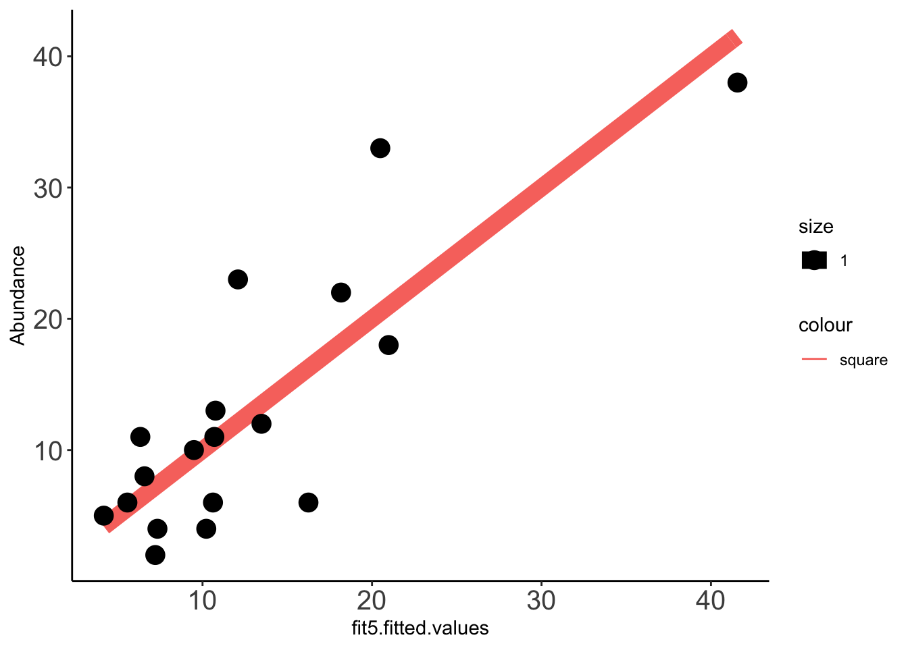
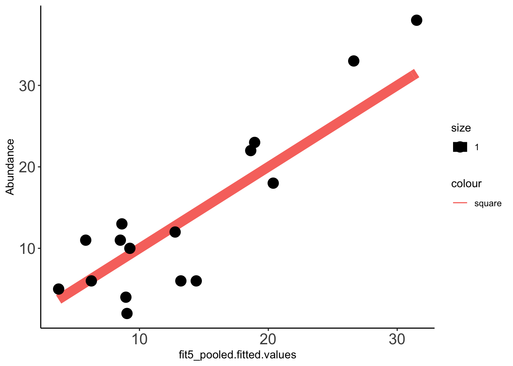
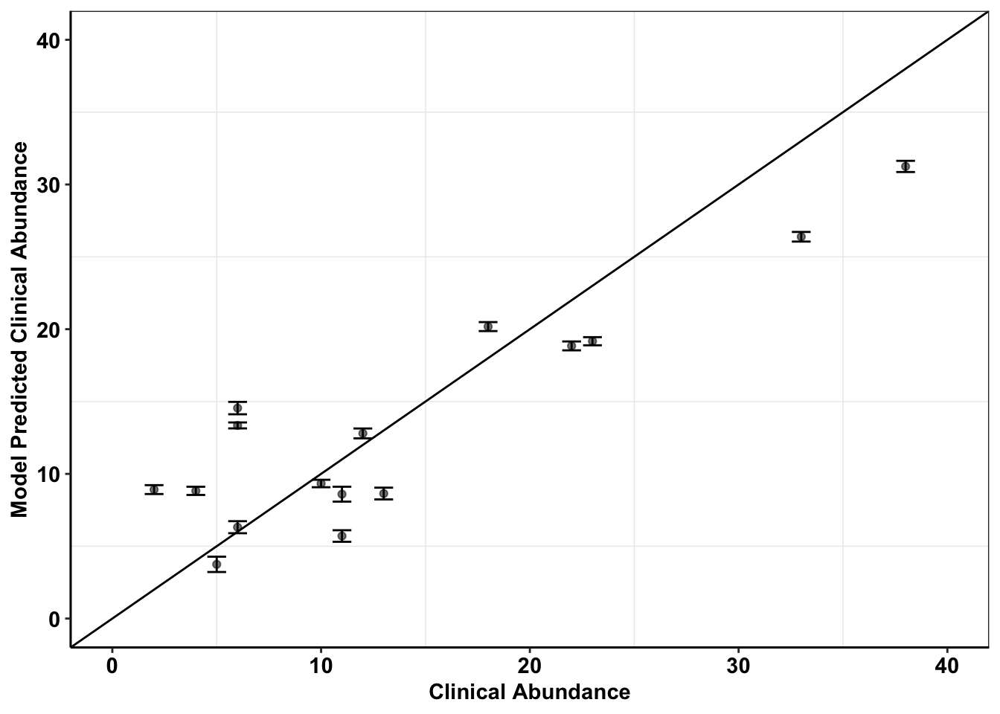

clinical_abundance_predictions
Haider Inam
4/3/2020
Last updated: 2020-04-20
Checks: 7 0
Knit directory: duplex_sequencing_screen/
This reproducible R Markdown analysis was created with workflowr (version 1.6.0). The Checks tab describes the reproducibility checks that were applied when the results were created. The Past versions tab lists the development history.
Great! Since the R Markdown file has been committed to the Git repository, you know the exact version of the code that produced these results.
Great job! The global environment was empty. Objects defined in the global environment can affect the analysis in your R Markdown file in unknown ways. For reproduciblity it’s best to always run the code in an empty environment.
The command set.seed(20200402) was run prior to running the code in the R Markdown file. Setting a seed ensures that any results that rely on randomness, e.g. subsampling or permutations, are reproducible.
Great job! Recording the operating system, R version, and package versions is critical for reproducibility.
Nice! There were no cached chunks for this analysis, so you can be confident that you successfully produced the results during this run.
Great job! Using relative paths to the files within your workflowr project makes it easier to run your code on other machines.
Great! You are using Git for version control. Tracking code development and connecting the code version to the results is critical for reproducibility. The version displayed above was the version of the Git repository at the time these results were generated.
Note that you need to be careful to ensure that all relevant files for the analysis have been committed to Git prior to generating the results (you can use wflow_publish or wflow_git_commit). workflowr only checks the R Markdown file, but you know if there are other scripts or data files that it depends on. Below is the status of the Git repository when the results were generated:
Ignored files:
Ignored: .Rhistory
Ignored: .Rproj.user/
Untracked files:
Untracked: analysis/grant_fig.pdf
Untracked: analysis/grant_fig_v2.pdf
Untracked: data/Combined_data_frame_IC_Mutprob_abundance.csv
Untracked: data/IC50HeatMap.csv
Untracked: data/Twinstrand/
Untracked: data/gfpenrichmentdata.csv
Untracked: data/heatmap_concat_data.csv
Untracked: grant_fig.pdf
Untracked: grant_fig_v2.pdf
Untracked: output/archive/
Untracked: output/ic50data_all_conc.csv
Untracked: shinyapp/
Unstaged changes:
Deleted: data/README.md
Modified: output/twinstrand_maf_merge.csv
Modified: output/twinstrand_simple_melt_merge.csv
Note that any generated files, e.g. HTML, png, CSS, etc., are not included in this status report because it is ok for generated content to have uncommitted changes.
These are the previous versions of the R Markdown and HTML files. If you’ve configured a remote Git repository (see ?wflow_git_remote), click on the hyperlinks in the table below to view them.
| File | Version | Author | Date | Message |
|---|---|---|---|---|
| Rmd | 2bba93e | haiderinam | 2020-04-20 | wflow_publish(“analysis/*.Rmd“) |
| html | c2930d5 | haiderinam | 2020-04-03 | Build site. |
| Rmd | 52f6884 | haiderinam | 2020-04-03 | wflow_publish(“analysis/*.Rmd“) |
Formatting the data to have mutant and observed net growth rate Also involves growth rate corrections
twinstrand_simple_melt_merge=twinstrand_simple_melt_merge%>%
mutate(drug_effect_obs=case_when(experiment=="M5"~drug_effect_obs+.015,
experiment=="Enu_3"~drug_effect_obs-.011,
experiment%in%c("M3","M6","M5","M4","M7")~drug_effect_obs)) #Therefore including both spike-in experiments and ENU mutagenized conditions.Predicting clinical abundance using a glm around mutation bias and netgr
#Using the mean of all experiments:
mean_netgr=twinstrand_simple_melt_merge%>%group_by(mutant)%>%summarize(netgr_mean=mean(netgr_obs,na.rm=T))
compicmut2=merge(compicmut,mean_netgr,by.x ="Compound",by.y="mutant")
# compicmut2$IC50=compicmut2$netgr
compicmut=compicmut2
#Notice that value here is your fitted IC50s
################Predictions using pooled IC50s################
fit5_pooled<-glm.nb(Abundance ~ netgr_mean+log10(Mutation.Probability), data=compicmut)
summary(fit5_pooled)
Call:
glm.nb(formula = Abundance ~ netgr_mean + log10(Mutation.Probability),
data = compicmut, init.theta = 8.795332235, link = log)
Deviance Residuals:
Min 1Q Median 3Q Max
-2.2054 -1.1023 0.2404 0.6654 1.3448
Coefficients:
Estimate Std. Error z value Pr(>|z|)
(Intercept) 4.7876 0.8235 5.813 6.12e-09 ***
netgr_mean 15.2134 6.4144 2.372 0.017705 *
log10(Mutation.Probability) 0.7783 0.2047 3.802 0.000144 ***
---
Signif. codes: 0 '***' 0.001 '**' 0.01 '*' 0.05 '.' 0.1 ' ' 1
(Dispersion parameter for Negative Binomial(8.7953) family taken to be 1)
Null deviance: 49.106 on 17 degrees of freedom
Residual deviance: 19.964 on 15 degrees of freedom
AIC: 117.21
Number of Fisher Scoring iterations: 1
Theta: 8.80
Std. Err.: 5.90
2 x log-likelihood: -109.207 Data_fit=data.frame(cbind(compicmut,fit5_pooled$fitted.values)) ###Need to check that doing a cbind this way makes the right mutants go to the right row in compicmut. Pretty sure it does.
x=ggplot(data =Data_fit,aes(fit5_pooled.fitted.values,Abundance))
x+stat_function(fun=function(x)x, geom="line", aes(colour="square",size=1.0))+geom_point(aes(size=1))+theme_classic()+theme(axis.text.x = element_text(size=15),axis.text.y = element_text(size=15))
| Version | Author | Date |
|---|---|---|
| c2930d5 | haiderinam | 2020-04-03 |
# ggplot(compicmut,aes(x=IC50,y=(drug_effect_obs^.5),label=Compound))+geom_text()
################Predictions using individual IC50s################
fit5<-glm.nb(Abundance ~ IC50+log10(Mutation.Probability), data=compicmut) #Best 2 variable model
summary(fit5)
Call:
glm.nb(formula = Abundance ~ IC50 + log10(Mutation.Probability),
data = compicmut, init.theta = 8.493014642, link = log)
Deviance Residuals:
Min 1Q Median 3Q Max
-1.88350 -0.86451 0.08648 0.42176 1.67167
Coefficients:
Estimate Std. Error z value Pr(>|z|)
(Intercept) 5.247e+00 7.707e-01 6.809 9.84e-12 ***
IC50 1.045e-04 4.022e-05 2.598 0.00939 **
log10(Mutation.Probability) 8.310e-01 2.040e-01 4.074 4.62e-05 ***
---
Signif. codes: 0 '***' 0.001 '**' 0.01 '*' 0.05 '.' 0.1 ' ' 1
(Dispersion parameter for Negative Binomial(8.493) family taken to be 1)
Null deviance: 48.126 on 17 degrees of freedom
Residual deviance: 18.618 on 15 degrees of freedom
AIC: 116.2
Number of Fisher Scoring iterations: 1
Theta: 8.49
Std. Err.: 5.17
2 x log-likelihood: -108.201 Data_fit=data.frame(cbind(Data_fit,fit5$fitted.values))
x=ggplot(data =Data_fit,aes(fit5.fitted.values,Abundance))
x+stat_function(fun=function(x)x, geom="line", aes(colour="square",size=1.0))+geom_point(aes(size=1))+theme_classic()+theme(axis.text.x = element_text(size=15),axis.text.y = element_text(size=15))
| Version | Author | Date |
|---|---|---|
| c2930d5 | haiderinam | 2020-04-03 |
#########Plotting predictions from inidivual IC50s and pooled experiments on the same plane#########
x=ggplot(data =Data_fit,aes(fit5.fitted.values,Abundance,label=Compound))
plotly=x+stat_function(fun=function(x)x, geom="line", aes(colour="square",size=1.0))+geom_text(aes(size=1,color="blue"))+geom_text((aes(x=fit5_pooled.fitted.values,size=1.0,color="green")))+theme_classic()+theme(axis.text.x = element_text(size=15),axis.text.y = element_text(size=15))
ggplotly(plotly)####Pearson's correlations
cor(Data_fit$fit5_pooled.fitted.values,Data_fit$Abundance,method="pearson")[1] 0.8805886cor(Data_fit$fit5.fitted.values,Data_fit$Abundance,method="pearson")[1] 0.8312331Predicting clinical abundances using the best spike-in mix
#Using just the experiment that ended up giving us the best growth rates.
mean_netgr=twinstrand_simple_melt_merge%>%filter(experiment%in%c("M3"),duration%in%("d3d6"))
mean_netgr=mean_netgr%>%filter(!netgr_obs%in%NA)%>%
select(mutant,netgr_obs)
compicmut2=merge(compicmut,mean_netgr,by.x ="Compound",by.y="mutant")
# compicmut2$IC50=compicmut2$netgr
compicmut=compicmut2
#Notice that value here is your fitted IC50s
################Predictions using pooled IC50s################
fit5_pooled<-glm.nb(Abundance ~ netgr_mean+log10(Mutation.Probability), data=compicmut)
summary(fit5_pooled)
Call:
glm.nb(formula = Abundance ~ netgr_mean + log10(Mutation.Probability),
data = compicmut, init.theta = 11.21444455, link = log)
Deviance Residuals:
Min 1Q Median 3Q Max
-2.2680 -0.5825 0.2918 0.5813 1.5319
Coefficients:
Estimate Std. Error z value Pr(>|z|)
(Intercept) 4.9595 0.7851 6.317 2.67e-10 ***
netgr_mean 16.2201 6.7385 2.407 0.0161 *
log10(Mutation.Probability) 0.8354 0.1962 4.258 2.07e-05 ***
---
Signif. codes: 0 '***' 0.001 '**' 0.01 '*' 0.05 '.' 0.1 ' ' 1
(Dispersion parameter for Negative Binomial(11.2144) family taken to be 1)
Null deviance: 49.929 on 15 degrees of freedom
Residual deviance: 18.420 on 13 degrees of freedom
AIC: 105.39
Number of Fisher Scoring iterations: 1
Theta: 11.21
Std. Err.: 9.05
2 x log-likelihood: -97.387 Data_fit=data.frame(cbind(compicmut,fit5_pooled$fitted.values)) ###Need to check that doing a cbind this way makes the right mutants go to the right row in compicmut. Pretty sure it does.
x=ggplot(data =Data_fit,aes(fit5_pooled.fitted.values,Abundance))
x+stat_function(fun=function(x)x, geom="line", aes(colour="square",size=1.0))+geom_point(aes(size=1))+theme_classic()+theme(axis.text.x = element_text(size=15),axis.text.y = element_text(size=15))
| Version | Author | Date |
|---|---|---|
| c2930d5 | haiderinam | 2020-04-03 |
# ggplot(compicmut,aes(x=IC50,y=(drug_effect_obs^.5),label=Compound))+geom_text()
################Predictions using individual IC50s################
fit5<-glm.nb(Abundance ~ IC50+log10(Mutation.Probability), data=compicmut) #Best 2 variable model
summary(fit5)
Call:
glm.nb(formula = Abundance ~ IC50 + log10(Mutation.Probability),
data = compicmut, init.theta = 9.531288067, link = log)
Deviance Residuals:
Min 1Q Median 3Q Max
-2.06327 -0.56673 0.08711 0.34958 1.59965
Coefficients:
Estimate Std. Error z value Pr(>|z|)
(Intercept) 5.398e+00 7.590e-01 7.111 1.15e-12 ***
IC50 9.498e-05 3.963e-05 2.397 0.0165 *
log10(Mutation.Probability) 8.578e-01 2.026e-01 4.235 2.29e-05 ***
---
Signif. codes: 0 '***' 0.001 '**' 0.01 '*' 0.05 '.' 0.1 ' ' 1
(Dispersion parameter for Negative Binomial(9.5313) family taken to be 1)
Null deviance: 45.705 on 15 degrees of freedom
Residual deviance: 16.734 on 13 degrees of freedom
AIC: 105.04
Number of Fisher Scoring iterations: 1
Theta: 9.53
Std. Err.: 6.35
2 x log-likelihood: -97.039 Data_fit=data.frame(cbind(Data_fit,fit5$fitted.values))
x=ggplot(data =Data_fit,aes(fit5.fitted.values,Abundance))
x+stat_function(fun=function(x)x, geom="line", aes(colour="square",size=1.0))+geom_point(aes(size=1))+theme_classic()+theme(axis.text.x = element_text(size=15),axis.text.y = element_text(size=15))
| Version | Author | Date |
|---|---|---|
| c2930d5 | haiderinam | 2020-04-03 |
#########Plotting predictions from inidivual IC50s and pooled experiments on the same plane#########
x=ggplot(data =Data_fit,aes(fit5.fitted.values,Abundance,label=Compound))
plotly=x+stat_function(fun=function(x)x, geom="line", aes(colour="square",size=1.0))+geom_text(aes(size=1,color="blue"))+geom_text((aes(x=fit5_pooled.fitted.values,size=1.0,color="green")))+theme_classic()+theme(axis.text.x = element_text(size=15),axis.text.y = element_text(size=15))
ggplotly(plotly)####Pearson's correlations
cor(Data_fit$fit5_pooled.fitted.values,Data_fit$Abundance,method="pearson")[1] 0.8939072cor(Data_fit$fit5.fitted.values,Data_fit$Abundance,method="pearson")[1] 0.8379013Supplemental Analysis
enu_plots=twinstrand_simple_melt_merge%>%filter(experiment%in%c("Enu_4","Enu_3"),duration%in%"d3d6")
#hardcoding adjustments to the growth rates
enu_plots$netgr_obs[enu_plots$experiment=="Enu_3"]=enu_plots$netgr_obs[enu_plots$experiment=="Enu_3"]-.011
a=twinstrand_simple_melt_merge%>%
filter(!experiment%in%c("Enu_4","Enu_3"),duration%in%"d3d6",conc=="0.8")%>%
mutate(netgr_obs=case_when(experiment=="M5"~netgr_obs+.015,
experiment%in%c("M3","M6","M5","M4","M7")~netgr_obs))
a_sum=a%>%group_by(mutant,Spike_in_freq)%>%summarize(mean_netgr_pred=mean(netgr_pred),mean_netgr_obs=mean(netgr_obs),sd_netgr_obs=sd(netgr_obs),mean_drug_effect=mean(drug_effect_obs),sd_drug_effect=sd(drug_effect_obs),mean_drug_effect_pred=mean(drug_effect),sd_drug_effect_pred=sd(drug_effect))
plotly=ggplot(a_sum,aes(x=mean_netgr_pred,y=mean_netgr_obs,color=factor(Spike_in_freq)))+geom_errorbar(aes(ymin=mean_netgr_obs-sd_netgr_obs,ymax=mean_netgr_obs+sd_netgr_obs))+geom_point()+geom_point(data=enu_plots%>%filter(experiment%in%("Enu_3")),aes(x=netgr_pred,y=netgr_obs,color="red"))+geom_abline()+cleanup
ggplotly(plotly)####Plotting drug effect on growth rate rather than net growth rate
plotly=ggplot(a_sum,aes(x=mean_drug_effect_pred,y=mean_drug_effect,color=factor(Spike_in_freq)))+geom_errorbar(aes(ymin=mean_drug_effect-sd_drug_effect,ymax=mean_drug_effect+sd_drug_effect))+geom_point()+geom_abline()+cleanup
ggplotly(plotly)plotly=ggplot(a_sum%>%filter(!Spike_in_freq%in%c(5000)),aes(x=mean_drug_effect_pred,y=mean_drug_effect,color=factor(Spike_in_freq)))+geom_errorbar(aes(ymin=mean_drug_effect-sd_drug_effect,ymax=mean_drug_effect+sd_drug_effect))+geom_point()+geom_abline()+cleanup
ggplotly(plotly)plotly=ggplot(a_sum,aes(x=mean_drug_effect_pred,y=mean_drug_effect,color=factor(mutant)))+geom_errorbar(aes(ymin=mean_drug_effect-sd_drug_effect,ymax=mean_drug_effect+sd_drug_effect))+geom_point()+geom_abline()+cleanup
ggplotly(plotly)
sessionInfo()R version 3.5.2 (2018-12-20)
Platform: x86_64-apple-darwin15.6.0 (64-bit)
Running under: macOS 10.15.4
Matrix products: default
BLAS: /Library/Frameworks/R.framework/Versions/3.5/Resources/lib/libRblas.0.dylib
LAPACK: /Library/Frameworks/R.framework/Versions/3.5/Resources/lib/libRlapack.dylib
locale:
[1] en_US.UTF-8/en_US.UTF-8/en_US.UTF-8/C/en_US.UTF-8/en_US.UTF-8
attached base packages:
[1] stats graphics grDevices utils datasets methods base
other attached packages:
[1] plotly_4.9.1 dplyr_0.8.4 boot_1.3-24
[4] lme4_1.1-21 Matrix_1.2-18 fitdistrplus_1.0-14
[7] npsurv_0.4-0 lsei_1.2-0 survival_3.1-8
[10] MASS_7.3-51.5 ggplot2_3.2.1 lmtest_0.9-37
[13] zoo_1.8-7 workflowr_1.6.0
loaded via a namespace (and not attached):
[1] tidyselect_1.0.0 xfun_0.12 purrr_0.3.3 splines_3.5.2
[5] lattice_0.20-38 vctrs_0.2.2 colorspace_1.4-1 viridisLite_0.3.0
[9] htmltools_0.4.0 yaml_2.2.1 rlang_0.4.4 later_1.0.0
[13] pillar_1.4.3 nloptr_1.2.1 glue_1.3.1 withr_2.1.2
[17] lifecycle_0.1.0 stringr_1.4.0 munsell_0.5.0 gtable_0.3.0
[21] htmlwidgets_1.5.1 evaluate_0.14 labeling_0.3 knitr_1.27
[25] fastmap_1.0.1 crosstalk_1.0.0 httpuv_1.5.2 Rcpp_1.0.3
[29] xtable_1.8-4 promises_1.1.0 scales_1.1.0 backports_1.1.5
[33] jsonlite_1.6 mime_0.8 farver_2.0.3 fs_1.3.1
[37] digest_0.6.23 stringi_1.4.5 shiny_1.4.0 grid_3.5.2
[41] rprojroot_1.3-2 tools_3.5.2 magrittr_1.5 lazyeval_0.2.2
[45] tibble_2.1.3 tidyr_1.0.2 crayon_1.3.4 whisker_0.4
[49] pkgconfig_2.0.3 ellipsis_0.3.0 data.table_1.12.8 httr_1.4.1
[53] assertthat_0.2.1 minqa_1.2.4 rmarkdown_2.1 R6_2.4.1
[57] nlme_3.1-143 git2r_0.26.1 compiler_3.5.2